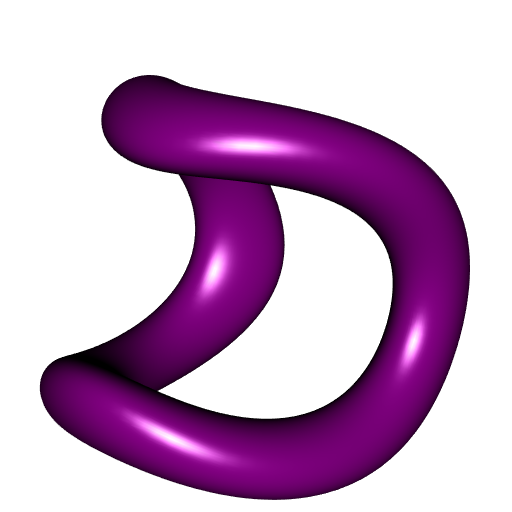

Drawing slices of a hypersurface with R
Let \(s \colon I \times J \times K \to \mathbb{R}^4\) be a parameterization of a hypersurface \(\mathcal{S}\), where \(I,J,K \subset \mathbb{R}\) are some intervals. I’m going to show how to draw the cross-section of \(\mathcal{S}\) by a hyperplane with R.
For the illustration, we consider the tiger:
R1 = 2; R2 = 2; r = 0.5
s <- function(u, v, w){
rbind(
cos(u) * (R1 + r*cos(w)),
sin(u) * (R1 + r*cos(w)),
cos(v) * (R2 + r*sin(w)),
sin(v) * (R2 + r*sin(w))
)
}Take a hyperplane: \[ \mathcal{P}\colon \quad \langle \mathbf{a}, \mathbf{x} \rangle = b, \] let \(\vec{\mathbf{n}} = \frac{\mathbf{a}}{\Vert\mathbf{a}\Vert}\) be a unit normal vector of \(\mathcal{P}\), and \(\mathbf{x}_0\) be an arbitrary point in \(\mathcal{P}\).
a = c(1, 1, 1, 1); b = 2 # plane x+y+z+w = 2
x0 = c(b, b, b, b)/4 # a point in this plane
nrml <- a/sqrt(c(crossprod(a))) # unit normalCompute a mesh \(\mathcal{M}_0\) of the isosurface \[ \bigl(s(u,v,w) - \mathbf{x}_0\bigr) \cdot \vec{\mathbf{n}} = 0. \]
library(misc3d)
f <- function(u, v, w){
c(crossprod(s(u, v, w), nrml))
}
u_ <- v_ <- w_ <- seq(0, 2*pi, length.out = 100L)
g <- expand.grid(u = u_, v = v_, w = w_)
voxel <- array(with(g, f(u,v,w)), dim = c(100L,100L,100L))
surf <- computeContour3d(voxel, level = sum(x0*nrml),
x = u_, y = v_, z = w_)
trgls <- makeTriangles(surf)
mesh0 <- misc3d:::t2ve(trgls)Denote by \(\mathcal{V}\mathcal{S}_0 \subset I \times J \times K\) the set of vertices of \(\mathcal{M}_0\), and set \(\mathcal{V}\mathcal{S} = s(\mathcal{V}\mathcal{S}_0) \subset \mathbb{R}^4\).
Let \(R\) be a rotation in \(\mathbb{R}^4\) which sends \(\vec{\mathbf{n}} =: \vec{\mathbf{v}}_1\) to the vector \((0,0,0,1) =: \vec{\mathbf{v}}_2\). One can take \(R\) corresponding to the matrix \[ \frac{2}{{(\vec{\mathbf{v}}_1+\vec{\mathbf{v}}_2)}' (\vec{\mathbf{v}}_1+\vec{\mathbf{v}}_2)} (\vec{\mathbf{v}}_1+\vec{\mathbf{v}}_2) {(\vec{\mathbf{v}}_1+\vec{\mathbf{v}}_2)}' - I_4. \]
rotationMatrix4D <- function(v1, v2){
v1 <- v1 / sqrt(c(crossprod(v1)))
v2 <- v2 / sqrt(c(crossprod(v2)))
2*tcrossprod(v1+v2)/c(crossprod(v1+v2)) - diag(4L)
}
Rot <- rotationMatrix4D(nrml, c(0,0,0,1))Now define \(\mathcal{V}\mathcal{S}' = R(\mathcal{V}\mathcal{S}) \subset \mathbb{R}^4\). Then all points in \(\mathcal{V}\mathcal{S}'\) are equal on their fourth coordinate (up to numerical errors in R):
VSprime <- Rot %*% VS
head(t(VSprime))
## [,1] [,2] [,3] [,4]
## [1,] 2.203740 -1.329658 -1.620365 0.9999785
## [2,] -1.324840 2.206491 -1.657871 1.0002417
## [3,] -1.320131 2.212244 -1.636339 0.9999972
## [4,] -1.417790 2.116178 -1.698381 0.9999926
## [5,] 2.219859 -1.310784 -1.651340 0.9999841
## [6,] 2.253515 -1.275147 -1.633245 1.0005005Finally, define \(\mathcal{V}\mathcal{S}'' \subset \mathbb{R}^3\) as the set obtained by removing the fourth coordinates of the elements of \(\mathcal{V}\mathcal{S}'\), and define the mesh \(\mathcal{M}\) whose set of vertices is \(\mathcal{V}\mathcal{S}''\) and with the same edges as \(\mathcal{M}_0\):
library(rgl)
mesh <- tmesh3d(
vertices = VSprime[-4L,],
indices = mesh0$ib,
homogeneous = FALSE,
normals = ?
)What about the normals? If you have an implicit equation defining \(\mathcal{S}\), that is, \(\mathcal{S} = \iota^{-1}(0)\) with \(\iota\colon \mathbb{R}^4 \to \mathbb{R}\), then a normal to \(\mathcal{S}\) at a point \(\mathbf{x} \in \mathbb{R}^4\) is given by the gradient of \(\iota\) at \(\mathbf{x}\). For the tiger, we know an implicit equation, and it is not difficult to get the gradient:
sNormal <- function(XYZT){
x <- XYZT[1L,]; y <- XYZT[2L,]; z <- XYZT[3L,]; t <- XYZT[4L,]
rbind(
x * (1 - R1/sqrt(x^2+y^2)),
y * (1 - R1/sqrt(x^2+y^2)),
z * (1 - R2/sqrt(z^2+t^2)),
t * (1 - R2/sqrt(z^2+t^2))
)
}
Normals <- sNormal(VS)Once you get the normals:
project them to the hyperplane \(\mathcal{P}\);
apply the rotation \(R\) to the projected normals;
remove the fourth coordinates (all equal);
if necessary, negate the normals.
The projection of \(\mathbf{x} \in \mathbb{R}^4\) to the hyperplane \(\mathcal{P}\) is given by \[ \mathbf{x} - \frac{\langle \mathbf{a}, \mathbf{x} \rangle - b}{\Vert \mathbf{a} \Vert^2} \mathbf{a}. \]
# projection onto hyperplane <a,x> = b
projection <- function(a, b, X){
X - tcrossprod(a/c(crossprod(a)), colSums(a*X)-b)
}
mesh <- tmesh3d(
vertices = VSprime[-4L,],
indices = mesh0$ib,
homogeneous = FALSE,
normals = -t((Rot %*% projection(a, b, Normals))[-4L,])
)This works:
shade3d(mesh, color = "darkmagenta")
Here is another way to get the normals. The normal at the point \(s(u,v,w)\) is \[ \frac{\partial s}{\partial u}(u,v,w) \times \frac{\partial s}{\partial v}(u,v,w) \times \frac{\partial s}{\partial w}(u,v,w) \] where \(\cdot \times \cdot \times \cdot\) is the ternary cross-product in \(\mathbb{R}^4\), defined by \[ \vec v_1 \times \vec v_2 \times \vec v_3 = \left\vert\begin{matrix} \vec i & \vec j & \vec k & \vec l \\ v_{1x} & v_{1y} & v_{1z} & v_{1t} \\ v_{2x} & v_{2y} & v_{2z} & v_{2t} \\ v_{3x} & v_{3y} & v_{3z} & v_{3t} \end{matrix}\right\vert. \]
crossProd4D <- function(v1, v2, v3){
M <- rbind(v1, v2, v3)
c(det(M[,-1L]), -det(M[,-2L]), det(M[,-3L]), -det(M[,-4L]))
}
sNormal <- function(uvw){
u <- uvw[1L]; v <- uvw[2L]; w <- uvw[3L]
Du <- c((R1 + r*cos(w))*c(-sin(u),cos(u)), 0, 0)
Dv <- c(0, 0, (R2 + r*sin(w))*c(-sin(v),cos(v)))
Dw <- r * c(-sin(w)*c(cos(u),sin(u)), cos(w)*c(cos(v),sin(v)))
crossProd4D(Du, Dv, Dw)
}
Normals <- apply(VS0, 2L, sNormal)Then you can calculate the normals in this way and proceed as before:
mesh <- tmesh3d(
vertices = VSprime[-4L,],
indices = mesh0$ib,
homogeneous = FALSE,
normals = t((Rot %*% projection(a, b, Normals))[-4L,])
)Here is how to do an animation:
b_ <- seq(-11.5, 11.5, length.out = 60L)
open3d(windowRect = c(100, 100, 612, 612), zoom = 0.8)
bg3d(rgb(54, 57, 64, maxColorValue = 255))
view3d(45, 40)
for(i in 1L:length(b_)){
x0 <- rep(b_[i]/4, 4L)
surf <- computeContour3d(voxel, level = sum(x0*nrml),
x = u_, y = v_, z = w_)
trgls <- makeTriangles(surf)
mesh0 <- misc3d:::t2ve(trgls)
VS0 <- mesh0$vb
VS <- s(VS0[1L,], VS0[2L,], VS0[3L,])
Normals <- sNormal(VS)
mesh <- tmesh3d(
vertices = (Rot %*% VS)[-4L,],
indices = mesh0$ib,
homogeneous = FALSE,
normals = -t((Rot %*% projection(a, b_[i], Normals))[-4L,])
)
shade3d(mesh, color = "firebrick3")
snapshot3d(sprintf("pic%03d.png", i))
clear3d()
}
for(i in 1L:59L){
file.copy(sprintf("pic%03d.png", 60-i), sprintf("pic%03d.png", 60+i))
}
# run gifski
command <- "gifski --fps 12 pic*.png -o slicedTiger.gif"
system(command)
# cleaning
pngfiles <- list.files(pattern = "^pic.*png$")
file.remove(pngfiles)
Toroidal hyperboloid
Let’s give another example, a toroidal hyperboloid. This is a quadric with implicit equation \[ \frac{x^2}{a^2} + \frac{y^2}{b^2} - \frac{z^2}{c^2} - \frac{t^2}{d^2} = 1, \] and a parameterization of this quadric is \[ \begin{array}{ccc} s \colon & (0,2\pi) \times (0,2\pi) \times (0, +\infty[ & \longrightarrow & \mathbb{R}^4 \\ & (u,v,w) & \longmapsto & \begin{pmatrix} a \cos u \cosh w \\ b \sin u \cosh w \\ c \cos v \sinh w \\ d \sin v \sinh w \end{pmatrix} \end{array}. \]